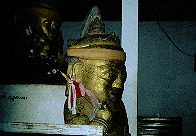
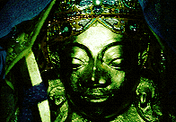
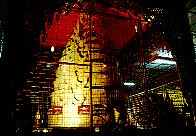
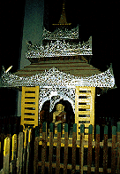
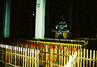
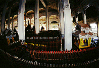
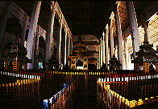

シュエジゴンパゴダ
ShweZiGhongPagoda
ミャンマー観光のメインスポットであるバガン。
といっても夜になると人も灯りも少ない寂しいところである。
そのかわり星がとてもキレイだ。
例によって夕食の腹ごなしにパゴダにお散歩。
この国では夜遊びといってもパゴダ参りしかないのだ。もっとも昼遊びもパゴダ参りしかないが。
で、シュエジゴンパゴダへ。
ライトアップされた美しい仏塔。
足元にはカエルがいて、踏みそうで油断できない。
 
怪しい仏像2例。宇宙人信仰か。

仏塔型回転式賽銭装置を発見。営業時間外だが回してもらう。
時折明りが点滅し、仏塔の足元の人形が御辞儀をする。素晴らしい。
境内の灯りもろくに届かないような隅っこに怪しいアトラクションが。
 
これは何かというと、迷路である。
何故パゴダに迷路があるのかといえばミャンマーというのはそういうところだからである。
面白ければそれでいいのである。
色とりどりの柵が渦巻く迷路の中にふら〜と入ってしまったが、結局出口まで着くのに20分近くも費やしてしまった。
迷路としてはさほど難しいものではないのだが細かく曲がりくねっていて時間がかかるのだ。
 
あまりにも面白いので、翌日また行ってしまった。
途中、数カ所に仏像が祀られている。
そこに参拝しながらまわるというオツな仕組み。
「次はどの仏塔かなあ〜」などと遠くを見ながら歩いていると、必ず柵の土台につまずくので注意。
結構、柵が破損したり傾いたりしている。
「先を見ないで今現在のあなたの足元をよ〜く見なさい」という有り難〜いことを教えくれているのだろうか。
次は山登りだ！
ミャンマーパゴダ列伝のページへ
珍寺大道場 HOME